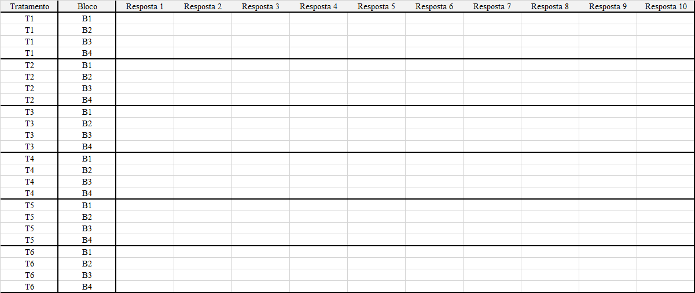
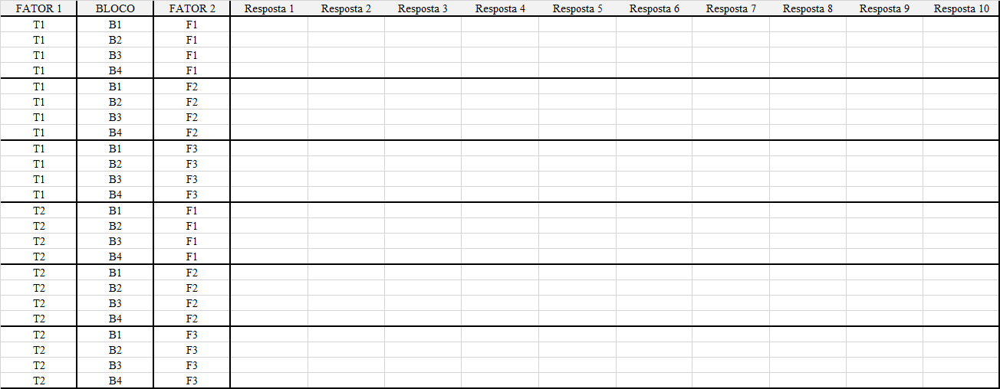

5 Tabulação de dados
Apesar da simplicidade em se tabular dados em uma planilha excel, a grande maioria dos acadêmicos tem dificuldade em se efetuar tal tarefa. Isso torna-se ainda pior, quando os mesmos precisam tabular de uma forma específica para um determinado Software. Nesse contexto, o presente tutorial tem a finalidade de auxiliar os usuários de R a estruturar a planilha em excel de tal forma a facilitar as análises com ênfase em experimentação agronômica.
O que não colocar em sua planilha!
Frequentemente é comum que os usuários de excel realizem cálculos de medidas de posição e dispersão, tais como média, variância, desvio-padrão, etc… Entretanto, essas células preenchidas por tais estatísticas de nada contribuem para quem irá trabalhar com o R, muito pelo contrário, acabam gerando mais trabalho, visto que em alguns casos podem ocasionar confundimento no Software;
Deve-se evitar nomes de colunas muito extensos, pois operacionalmente digitar tais nomes pode gerar complicações futuras;
Nome de colunas sempre na primeira linha;
Evitar nome dos níveis do fator (Tratamentos) como numérico (1,2,3,4,…), exceto quando os tratamentos são quantitativos;
Evitar pular células (Células em branco), a menos que tenha dados faltantes (parcelas perdidas).
Monte a planilha da forma mais simples possível!!!
5.1 DIC unifatorial
Experimentos em delineamento inteiramente casualizado só possuem o tratamento como fator. Dessa forma, em uma planilha, só necessitamos de uma coluna de tratamentos e uma coluna de resposta.
Quando há mais de uma variável resposta, pode-se adicionar as variáveis em cada coluna, lado a lado.
Abaixo, segue um imagem de como montar um arquivo em excel de um experimento em DIC com seis tratamentos e quatro repetições e o link para o download de um arquivo em excel (extensão .xlsx)

Download: DIC
5.2 DBC unifatorial
Experimentos em delineamento em blocos casualizados possuem o tratamento e o bloco como fatores. Dessa forma, em uma planilha necessitamos de uma coluna de tratamentos, uma coluna do bloco e uma coluna de resposta.
Quando há mais de uma variável resposta, pode-se adicionar as variáveis em cada coluna, lado a lado.
Abaixo, segue um imagem de como montar um arquivo em excel de um experimento em DBC com seis tratamentos e quatro blocos e o link para o download de um arquivo em excel (extensão .xlsx)

Download: DBC
5.3 DQL
Experimentos em delineamento em quadrado latino possuem o tratamento, a linha e a coluna como fatores. Dessa forma, em uma planilha necessitamos de uma coluna de tratamentos, uma da linha, uma da coluna e uma da resposta.
Quando há mais de uma variável resposta, pode-se adicionar as variáveis em cada coluna, lado a lado.
Abaixo, segue um imagem de como montar um arquivo em excel de um experimento em DBC com seis tratamentos e quatro blocos e o link para o download de um arquivo em excel (extensão .xlsx)

Download: DQL
5.4 Fatorial duplo em DIC
Experimentos em delineamento inteiramente casualizado em que há mais de um fator estudado, ou seja, possui um fator A e um fator B, necessitam ser tabulados da seguinte forma: uma coluna do fator A, uma coluna do Fator B e uma coluna de resposta.
Quando há mais de uma variável resposta, pode-se adicionar as variáveis em cada coluna, lado a lado.
Quando há mais um fator (três fatores), adicionar uma coluna ao lado do fator 3.
Abaixo, segue um imagem de como montar um arquivo em excel de um experimento em DBC com seis tratamentos e quatro blocos e o link para o download de um arquivo em excel (extensão .xlsx)

Download: DIC Fatorial
5.5 Fatorial Duplo em DBC
Experimentos em delineamento inteiramente casualizado em que há mais de um fator estudado, ou seja, possui um fator A e um fator B, necessitam ser tabulados da seguinte forma: uma coluna do fator A, uma coluna do Fator B e uma coluna de resposta.
Quando há mais de uma variável resposta, pode-se adicionar as variáveis em cada coluna, lado a lado.
Quando há mais um fator (três fatores), adicionar uma coluna ao lado do fator 3.
Abaixo, segue um imagem de como montar um arquivo em excel de um experimento em esquema fatorial 2 x 3, com dois níveis do fator A e três níveis do fator B, com quatro repetições e o link para o download de um arquivo em excel (extensão .xlsx)

Download: DBC Fatorial
5.6 Parcela subdividida em DIC
Experimentos em delineamento inteiramente casualizado em que os tratamentos são posicionados em parcelas e subparcelas, caracterizam o esquema de parcela subdividida e possuem dois fatores estudados, dessa forma, necessitam ser tabulados da seguinte forma: uma coluna do fator A, uma coluna da repetição, uma coluna do Fator B e uma coluna de resposta.
Quando há mais de uma variável resposta, pode-se adicionar as variáveis em cada coluna, lado a lado.
Abaixo, segue um imagem de como montar um arquivo em excel de um experimento em esquema de parcelas subdivididas 2 x 3, com dois níveis da parcela e três níveis da subparcela, com três repetições e o link para o download de um arquivo em excel (extensão .xlsx)

Download: DIC Parcela subdividida
5.7 Parcela subdividida em DBC
Experimentos em delineamento em blocos casualizados em que os tratamentos são posicionados em parcelas e subparcelas, caracterizam o esquema de parcela subdividida e possuem dois fatores estudados, bem como o bloco, dessa forma, necessitam ser tabulados da seguinte forma: uma coluna da parcela, uma coluna dos blocos, uma coluna da subparcela e uma coluna de resposta.
Quando há mais de uma variável resposta, pode-se adicionar as variáveis em cada coluna, lado a lado.
Abaixo, segue um imagem de como montar um arquivo em excel de um experimento em esquema de parcelas subdivididas 2 x 3, com dois níveis da parcela e três níveis da subparcela, com quatro blocos e o link para o download de um arquivo em excel (extensão .xlsx)

Download: DBC Parcela subdividida